Get started
Desktop GUI Tutorial
A complete run of the desktop app on the data that ships with get_MNV, screen by screen: loading the files, what the parameters change, how to read the summary, and how to look at the reads behind a call.
If you have not installed the app yet, see Desktop GUI. The same walkthrough on the command line is Command Line Tutorial.
Where these screenshots come from
They are captured from the browser demo in frontend/demo/, which renders the app's real components against fixture data instead of calling the Rust backend. The numbers, the reads and the table are the genuine output of get_mnv on the files in example/; only the plumbing between the form and the engine is stood in for, so the pages can be captured without building a desktop bundle.
What you need
Everything is in the example/ folder of the repository:
| File | Role |
|---|---|
G35894.var.snp.vcf | the variant calls |
MTB_ancestor.fas | the reference the calls were made against |
anot_genes.txt | a simple gene table |
G35894.demo.bam (+ .bai) | a small alignment, for read support |
1. Load the inputs
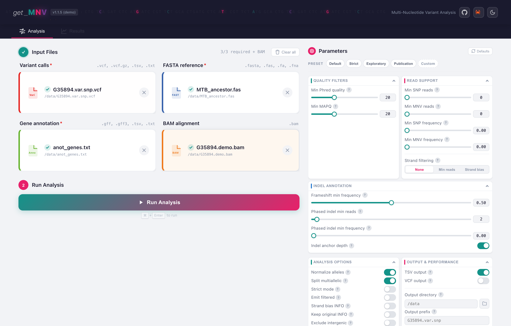
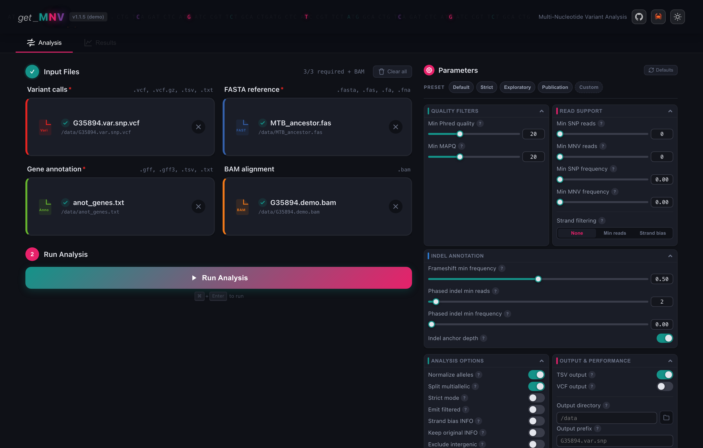
Drop each file on its zone, or click to browse. Three are required and marked with a red asterisk; the counter reads 3/3 required + BAM once they are set, and the Run button turns on.
- Variant calls takes a plain or BGZF-compressed VCF, or an iVar
variants.tsv. The app detects which it is from the file. - FASTA reference must be the reference the variants were called against. get_MNV writes the
.faiindex itself if it is missing. - Gene annotation takes a GFF/GFF3 or a simple gene table.
anot_genes.txtis a gene table, so no GFF feature picker appears; load a GFF and a GFF features panel shows up where you choose which feature types to read (gene,pseudogeneby default,CDSfor spliced transcripts). - BAM alignment is optional, and it is what turns an annotation into evidence. Without it, get_MNV reports what your caller said. With it, it counts the reads itself and can tell a real codon-level haplotype from two substitutions that never shared a molecule. See Linkage.
2. Set the parameters
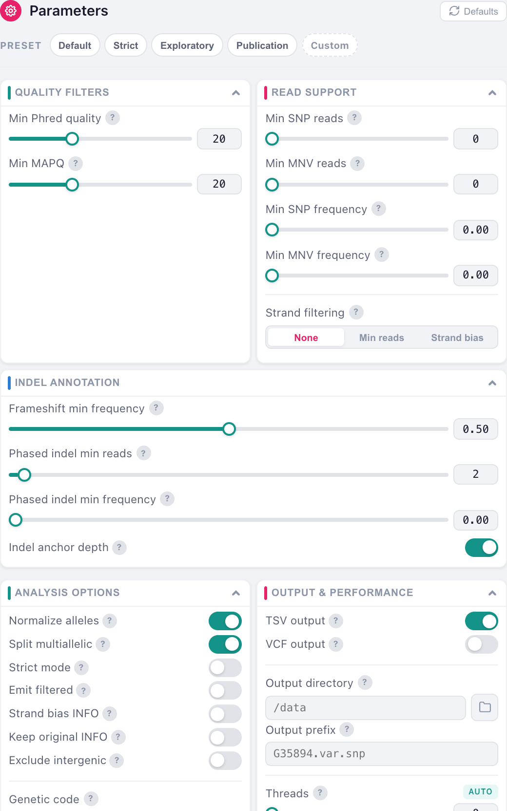
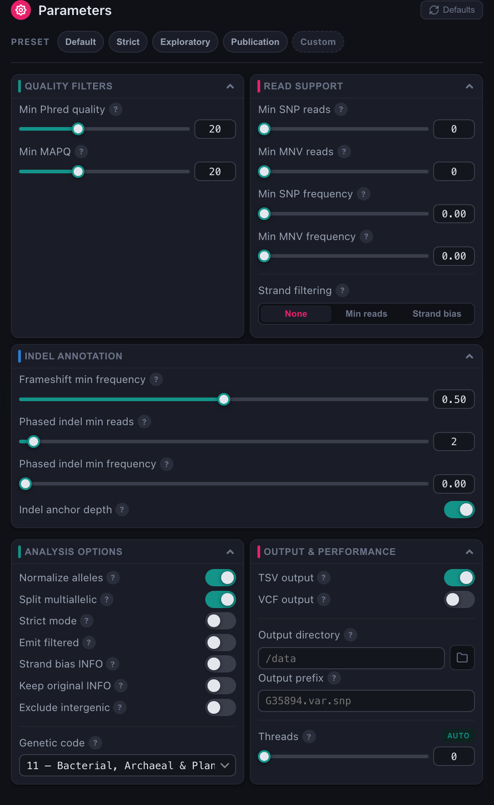
The sidebar groups every knob the app exposes, and the four preset chips at the top set them in bulk. The moment you change one, the preset chip switches to Custom, which is what the screenshot above shows.
Why this screenshot shows 0 and not the default 2
The form ships with Min SNP reads and Min MNV reads at 2, and those thresholds only apply when a BAM is loaded. G35894.demo.bam is a tiny demonstration file that covers a single locus, so with the default floor every other row loses its support and the output drops from 941 rows to 1. Both are set to 0 here for that reason; on a real alignment, leave them alone. The Command Line Tutorial explains how the two thresholds combine, which is not obvious.
Five of the form's defaults are deliberately stricter than the CLI's; they are listed in Desktop GUI. Everything the form does not show falls back to the CLI default.
3. Run
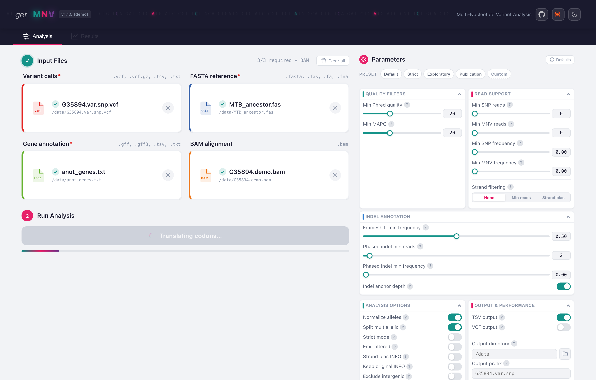
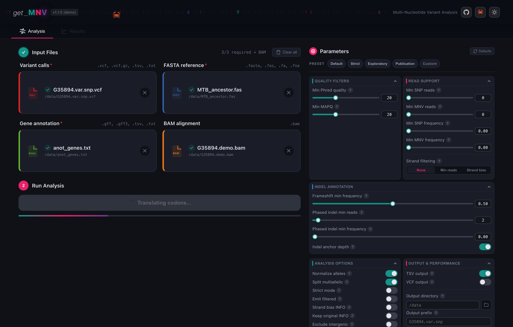
The button reports the phase it is in as it goes. A run over this dataset takes well under a second; the progress bar matters on cohorts, where you can queue several matched samples and let them run in one batch.
4. Read the summary
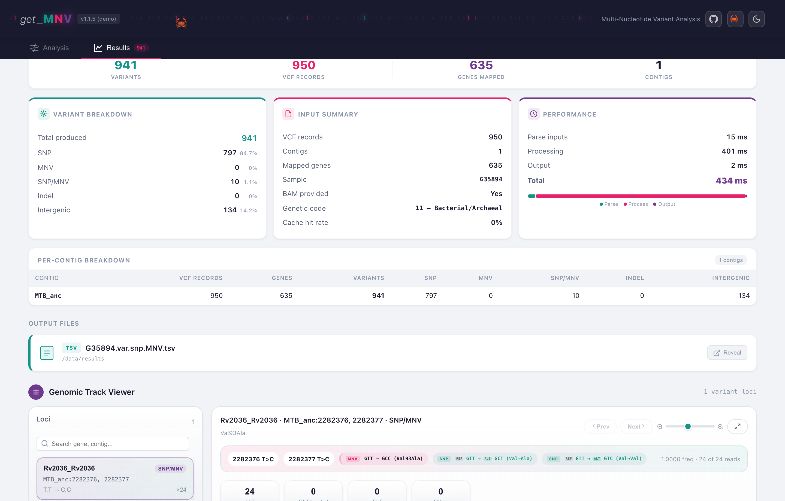
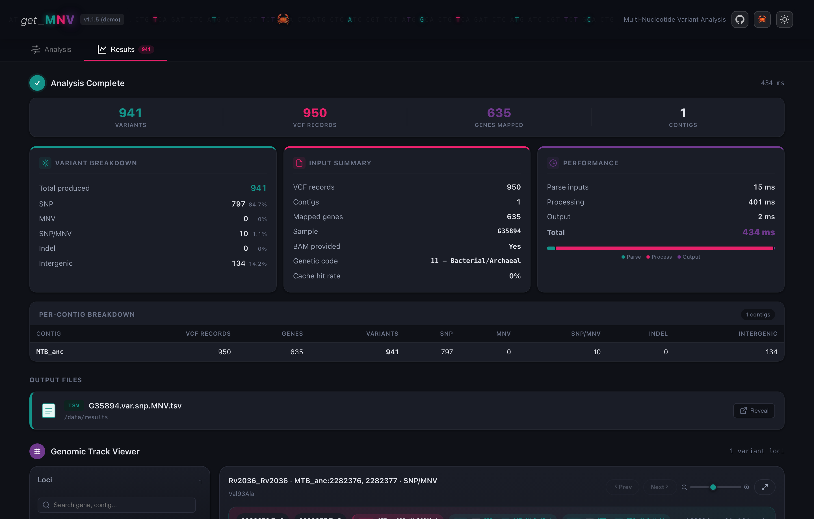
The top row is the shape of the run: 941 variants produced from 950 VCF records over 635 mapped genes on 1 contig. Records and variants differ because a codon carrying two substitutions is reported once.
Variant breakdown is the part worth reading slowly:
| Row | Here | What it counts |
|---|---|---|
| SNP | 797 | one substitution in a codon |
| MNV | 0 | a single VCF record that already carried more than one substituted base |
| SNP/MNV | 10 | separate VCF records that get_MNV found in the same codon |
| Indel | 0 | insertions and deletions |
| Intergenic | 134 | outside any annotated gene |
MNV is 0 and SNP/MNV is 10 because this caller emitted one record per base. Those ten rows are what a per-SNV annotator would have reported as twenty independent substitutions with the wrong amino acids, and they are the reason the tool exists.
Below, per-contig breakdown repeats the figures per sequence, and output files shows what was written, with a button to reveal it in your file manager.
5. Look at the reads
Search the locus list for Rv2036 and open it. This is the codon that Command Line Tutorial walks through.
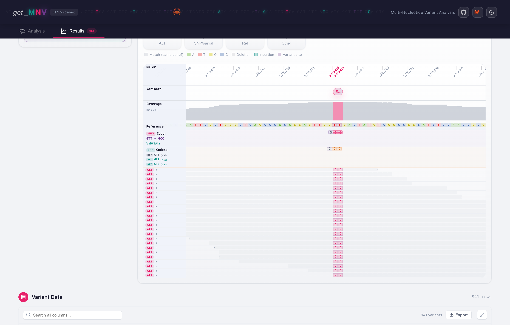
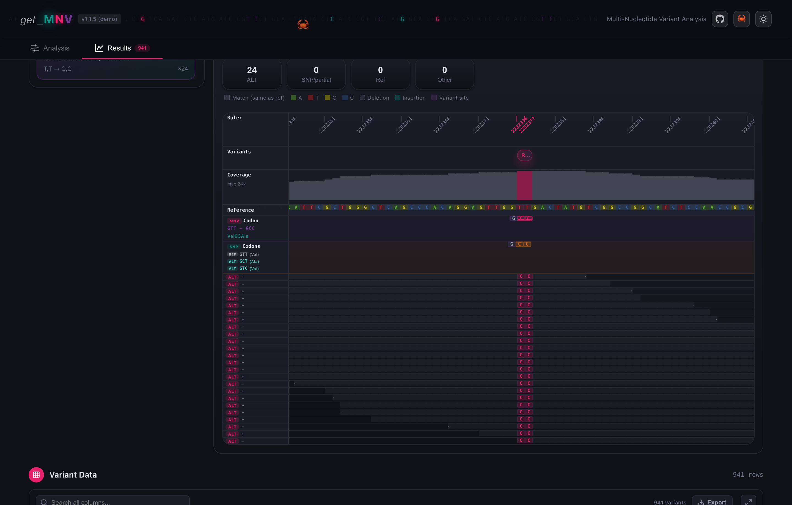
The tracks line up column by column over the same coordinates:
- the ruler, with the two variant positions marked in red (
2282376,2282377); - coverage, peaking at 24x here;
- the reference sequence;
- the codon tracks: reference
GTT, the individual SNP codonsGCTandGTC, and the combined MNV codonGCC; - the read pileup, one row per read, each labelled with the support it gives and the strand it came from.
All 24 reads are marked ALT, 12 on each strand, and the row reports MNV Frequencies 1.0000. Read separately, the two substitutions say different things: GCT alone is Val93Ala, GTC alone is Val93Val, a silent change. Together they make GCC, which is Ala. That is a call you cannot get right one base at a time.
Why the SNP read counts are zero
The row shows SNP Reads 0, 0 next to MNV Reads 24. SNP Reads counts reads that carry one substitution without the full haplotype. Here every read carries both, so none is counted as solo support and all 24 sit in MNV Reads. The two columns split the evidence rather than double-count it. See Output formats.
6. Filter and export
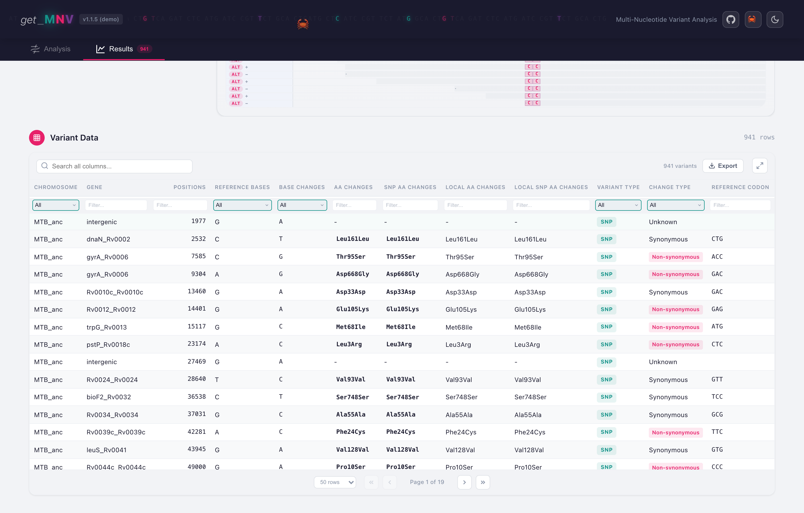
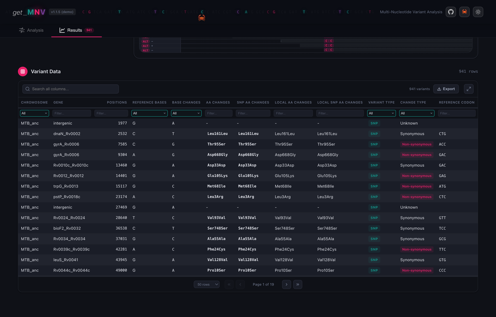
The table holds every row of the TSV. Search across all columns, or filter one at a time: the dropdowns take a value, the text boxes match as you type. Sort by clicking a header, expand to full screen, and Export writes the current view to TSV or VCF.
The same run on the command line
The form state in these screenshots is the app's defaults with the two read floors lowered, which on the command line is:
get_mnv \
--vcf example/G35894.var.snp.vcf \
--fasta example/MTB_ancestor.fas \
--genes example/anot_genes.txt \
--bam example/G35894.demo.bam \
--min-mapq 20 --normalize-alleles --split-multiallelic--snp and --mnv are already 0 on the command line, so they need no flag. Add --snp 2 --mnv 2 to get what the form does untouched, and on this dataset the output falls to the single row that has read support.
Where to go next
- Output formats for what every column means.
- Linkage for how get_MNV decides that variants really travel together.
- CLI reference for the options the form does not expose.